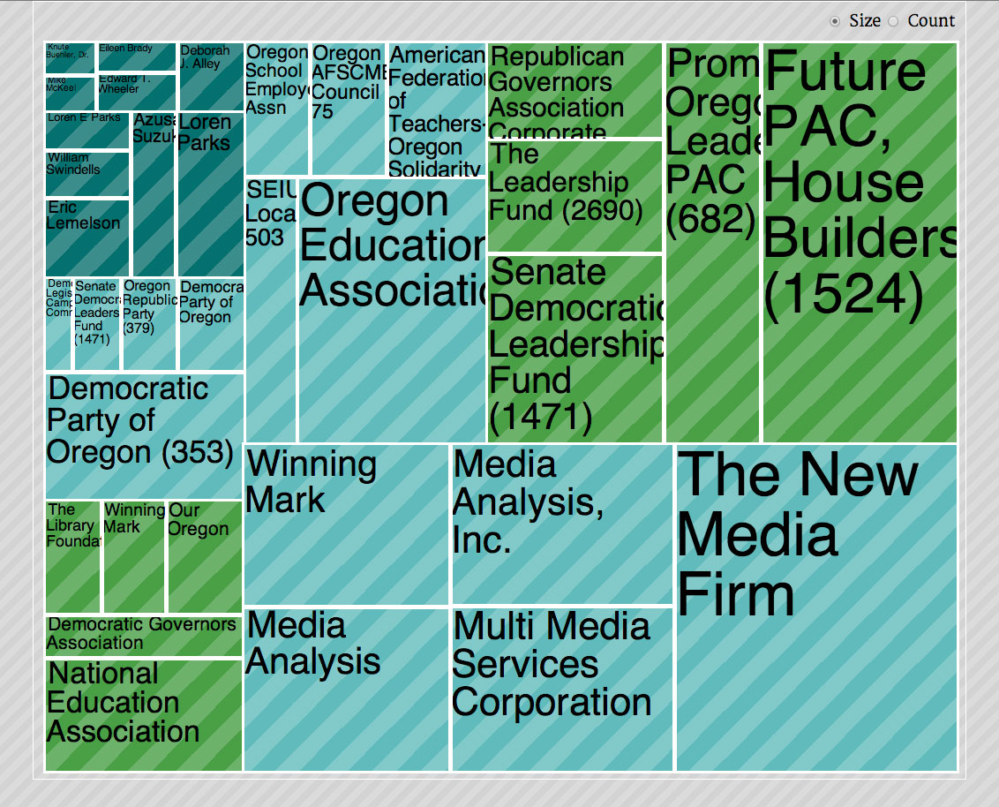
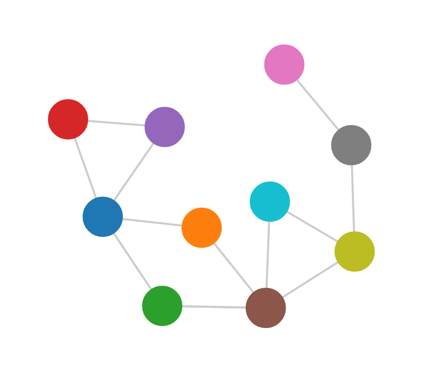
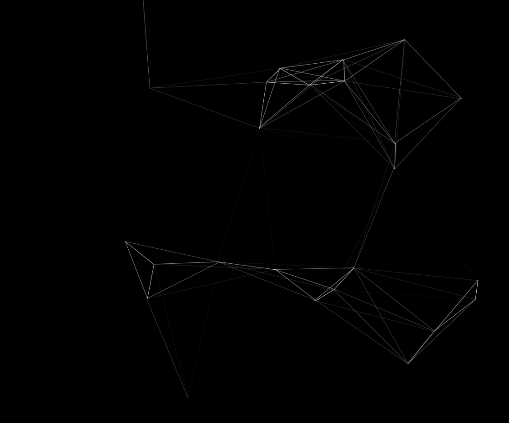
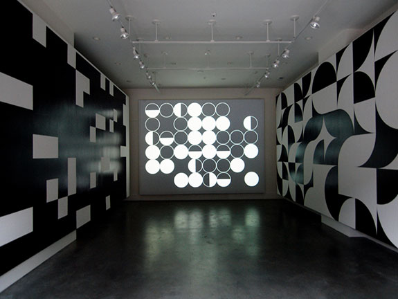
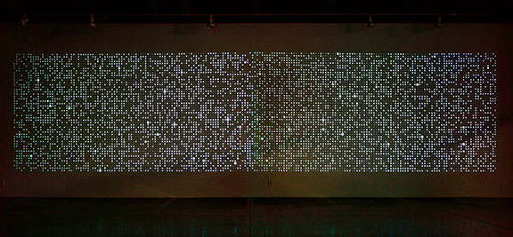
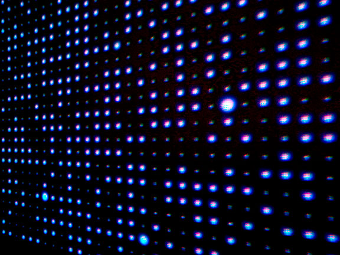

arcydouglass at gmail.com
I have a background in Architecture, Art and Design so when I found out that I could draw pictures of information with D3 I was hooked. Here are some experiments.
This was an experiment to see if the D3 Treemap template could be modified to generate a treemap that has a different character than standard treemaps. In this case, I added custom colors, a new font and CSS striping to generate a new look.
Here is a very simple D3 Force Graph. Each node is connected according to the data and repels every other one.
Click on image to play Github Link Here is a very simple D3 force Bubble graph. Each Bubble will repel every other one.
Click on image to play Github LinkThis is a fun project that I developed from an exercise in the book Foundation HTML5 Animation by Billy Lamberta and Keith Peters. The lines are drawn according to a the proximity of moving balls.
Click on image to play Github Link This was an installation that combined computer generated elements and wall paintings. The wall paintings are on the side, the circles are projected in the center. I was very interested in the idea that one could create a very simple, very easy understand system that would have so many permutations that it would become essentially unknowable. In this case, even though the circle are based on a simple 6 x 7 grid there are more permutations to the field than there molecules in a human body. To watch the installation from start to finish would take over a million years.
This was an installation using Flash that created a massive field of ten thousand individual circles that slowly increase and decrease in size according to a random number generator. The intention was to create a space that could be seen all at once but is still constantly changing and evolving. The more time spent watching, the more there was to see. The installation was 12 feet tall and 50 feet wide. The circles were projected from two projectors each display five thousand circles.
 